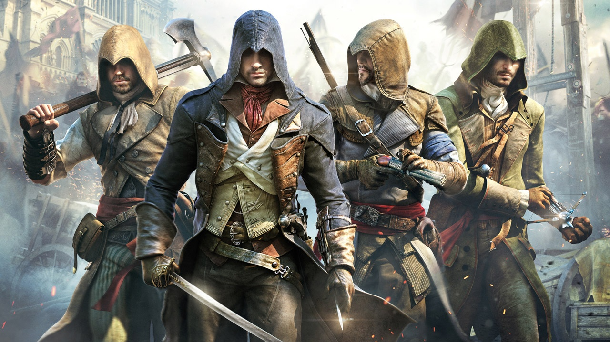

Bayek of Siwa
"We work in the dark to serve the light. We are Assassins."
THE LAST MEDJAY & THE PTOLEMAIC DYNASTY
Set in Ancient Egypt during the Ptolemaic period (49 BC), the story follows Bayek of Siwa. As the last Medjay, he is a protector of his people but is driven by the tragic murder of his son, Khemu, to hunt down the Order of the Ancients.
His journey alongside his wife Aya leads to the creation of the "Hidden Ones," the precursor to the Assassin Brotherhood. This era depicts the clash between traditional Egyptian culture and the rising influence of Rome under Julius Caesar.

Arno Dorian
"The Creed of the Assassin Brotherhood teaches us that nothing is forbidden."
THE FRENCH REVOLUTION
Set in Paris during the chaos of the French Revolution (1789), the story follows Arno Dorian. After being framed for the murder of his Templar adoptive father, Arno joins the Assassins to seek redemption and expose the true instigators of the Revolution.
The narrative explores the blurred lines between Assassins and Templars, highlighted by Arno's tragic romance with Élise de la Serre, a Templar seeking the same revenge. Together, they navigate a city consumed by the Terror.

Jacob & Evie Frye
"Whosoever controlleth London, controlleth the world."
THE INDUSTRIAL REVOLUTION
Set in London at the height of the Industrial Revolution (1868), the story follows the twin Assassins, Jacob and Evie Frye. They arrive in London to liberate the working class from the stranglehold of the Templar Grand Master, Crawford Starrick.
While the brash Jacob leads the "Rooks" street gang to take back the city by force, the calculating Evie searches for the Piece of Eden known as the Shroud. Together, they fight to break the corrupt chains binding London.